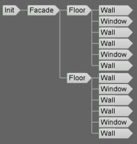

getTreeKey function
Syntax
string getTreeKey()
Returns
The unique TreeKey of the shape being derived, formatted as a string list. The TreeKey is a list of integer numbers denoting the path from the root shape to the shape being derived in the shape tree. Each number denotes the 0-based child index, see example 1 below.
Note: the TreeKey stays the same during derivation of the whole rule, see example 2 below.
Examples
Simple Example
CGA Code
Init-->
print(getTreeKey() + " - Init")
center(xz)
extrude(10)
comp(f) { front: Facade}
Facade-->
print(getTreeKey() + " - Facade")
split(y) {'0.5 : Floor }*
Floor-->
print(getTreeKey() + " - Floor")
split(x) { '0.1 : Wall | '0.3 : Window | '0.1 : Wall }*
Wall-->
print(getTreeKey() + " - Wall")
Window-->
print(getTreeKey() + " - Window")
CGA Console Output
0; - Init 0;0; - Facade 0;0;0; - Floor 0;0;1; - Floor 0;0;0;0; - Wall 0;0;0;1; - Window 0;0;0;2; - Wall 0;0;0;3; - Wall 0;0;0;4; - Window 0;0;0;5; - Wall 0;0;1;0; - Wall 0;0;1;1; - Window 0;0;1;2; - Wall 0;0;1;3; - Wall 0;0;1;4; - Window 0;0;1;5; - Wall
Model Hierarchy
The TreeKey stays the same during Derivation of the whole Rule
CGA Code
ShapeA -->
print(getTreeKey)
split(x){ 2: ShapeB print(getTreeKey) | 3: ShapeC print(getTreeKey) }
CGA Console Output
0; 0; 0;
Copyright ©2008-2023 Esri R&D Center Zurich. All rights reserved.